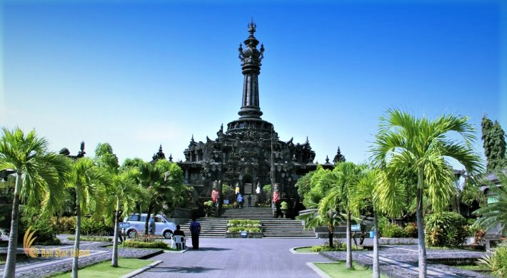
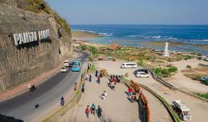
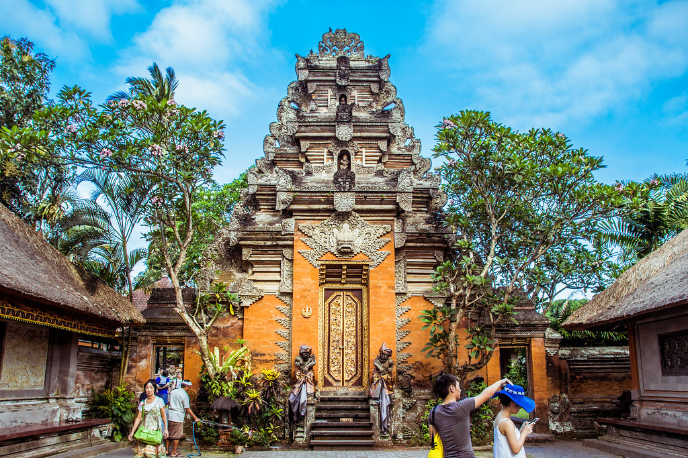

MONUMEN BAJRA SANDHI
Monumen dengan gaya arsitektur yang mengagumkan. Eksterior bangunan dipenuhi detail ornamen tradisional Bali yang apik difoto dari berbagai sudut. Didalam terdapat diorama-diorama yang menggambarkan perjalanan sejarah serta perjuangan rakyat Bali. Anda dapat melihat lansekap provinsi Bali membentang hingga cakrawala dari puncak monumen. Diluar, banyak masyarakat memanfaatkan taman publik dan lapangan-lapangan yang mengelilingi monumen untuk berolahraga dari jogging hingga sepakbola.
di dalam monumen kurang cocok untuk berfoto krna sangat penuh pngunjung.. lebih nyaman dari luar dn di area taman. area taman cocok untuk piknik sore dan jogging.

berkali kali kesini tapi cuma diluar aja jogging . baru kali ini masuk kedalam naik sampai atas😁 di dalamnya museum tentang perjuangan rakyat Bali. ada tangga cukup tinggi untuk sampai ke menara atas, bisa melihat denpasar dari ketinggian 45m
PANTAI KELINGKING

Selama 1 day trip ini menurutku paling terbaik pemandangannya. Semua bagus tapi Kelingking paling bagus. Worth it banget meskipun harus nyebrang pulau dan naik mobil dengan track jalanan yg cukup terjal dan sempit. Kalian harus banget ke Kelingking Beach!!! Salut untuk warga lokal Bali yg selalu menjaga alam dan membuat destinasi wisata nya mudah diakses. Gak heran Bali selalu punya tempat tersendiri di hati tiap orang yang pernah dan belum pernah kemari. Tapi worry juga lihat turis lokal/ internasional yg nekat naik motor di Nusa Penida. Menurutku itu cukup berbahaya. Info dari driver kami banyak turis internasional yg meninggal jatuh ke tebing saat mengendarai motor. Mungkin karena mereka tidak terbiasa mengendarai kendaraan di medan yg sangat terjal dan berbahaya. So beware ya guys, lebih disarankan ikut trip saja karena ada tour guide yg memang mengenal jalanan dan tempat disana
View nya sangat indah jika ingin lebih dekat disediakan tangga turun ke bawah Hanya bayar parkir 5.000 Banyak pengunjung WNA Cuaca sangat terik Harga ice kiko 10.000/pcs mungkin karena akses kesini yang jauh jadi harga makanan lumayan mahal Hati hati disini banyak monyet nya
Kelingking Beach merupakan salah satu pantai di nusa penida yang sangat terkenal dan viral. Disini sangat panas jadi persiapkan sunscreen. Kelingking Beach ini banyak warung pinggir pantai jadi tidak bingung untuk cari makanan dan minuman. Untuk kendaraan banyak sekali kantong parkir jadi tidak perlu kwatir memarkirkan kendaraan. Kelingking Beach sangat indah apalagi ketika sunset.
PAINTAI PANDAWA
Pantainya sangat bagus. Banyak tebing-tebing yang menjulang tinggi bagus untuk spot foto, Tebing-tebingnya seperti yang di GWK keren 👍. Garis pantainya panjang. Kondisinya sangat bersih, rapi dan tertata. Tempat parkir banyak dan luas. Tiket masuknya sendiri terjangkau. HTM per orang Rp. 8000,- parkir Rp. 5000,- Disediakan toilet bayar Rp. 2000,- Ada penjual-penjual makanan & sovenir.
Pantai yang sangat bagus sekali, awal masuk pantai, pemandangan sudah sangat indah dan menajubkan, karena dikelilingi tebing kapur, Dipantai nya memiliki pasir putih yang halus. air laut yang jernih, sangat baik untuk berenang, suasana tenang. Banyak penjual makanan, sering diadakan pagelaran budaya Bali. Banyak fasilitas toilet juga, Sangat baik, jika dikunjungi keluarga atau rombongan
Akses jalannya bagus dan mudah dijangkau. pemandangannya luar biasa dengan tebing batunya dan ombak khas laut selatan. luarbiasa
MONUMEN BAJRA SANDHI
우붓 왕궁에 며칠에 걸쳐 로열 패밀리 장례식 준비를 지켜봤네요. 일요일이 장례식인데 흔한 경험은 아닐 것 같아요.
Tanpa biaya Senang menghabiskan waktu selama beberapa menit Area yang terawat dan hijau Tidak banyak yang bisa dilihat, tidak ada yang istimewa, areanya tidak luas 5 Bintang: Sungguh istimewa, Anda harus mencobanya 4 Bintang: Enak, Anda harus mencobanya 3 Bintang: Tidak ada yang istimewa, Anda bisa mencobanya 2 Bintang: Coba hanya jika Anda tidak punya alternatif 1 Bintang: Buruk, jangan repot-repot mencoba
Tempat bagus untuk jalan2 gratis karena didepan tempat utk belanja souvenir & nongkrong dicafe